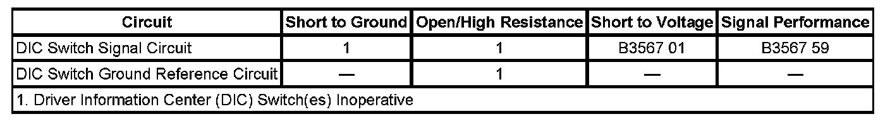

B3567
DTC B3567
DTC DESCRIPTORS
DTC B3567 01
Driver Information Center (DIC) Select Switch Circuit Short To Battery
DTC B3567 59
Driver Information Center (DIC) Select Switch Circuit /Component Protection Time-Out
DIAGNOSTIC FAULT INFORMATION

Perform the Diagnostic System Check - Vehicle prior to using this diagnostic procedure. Initial Inspection and Diagnostic Overview
CIRCUIT/SYSTEM DESCRIPTION
The driver information switches are normally open momentary switches. Power is provided to the driver information center (DIC) switches via the instrument panel cluster (IPC) ignition 1 voltage circuit. The IPC ignition 1 voltage circuit is fused in the body control module (BCM). The IPC interfaces with the DIC switches via 3 discreet circuits. The switch input to the cluster is pulled low or grounded when a switch is activated. The IPC reads the voltage at the analog input to determine which switch(es) is pressed. The switch input to the cluster is set up in a resistor ladder format. The DIC switches include the PERSONALIZATION, SET/RESET, TRIP/FUEL, AND VEHICLE INFO switches. A stuck switch or a short to battery sets a DTC.
CONDITIONS FOR RUNNING THE DTC
The ignition is in ACCESSORY or RUN.
CONDITIONS FOR SETTING THE DTC
- The IPC detects that the DIC switch is stuck.
- The IPC detects that the DIC switch signal circuit is shorted to battery.
ACTION TAKEN WHEN THE DTC SETS
The IPC ignores the DIC switch inputs.
CONDITIONS FOR CLEARING THE DTC
- The DTC becomes history when the conditions for setting the DTC are no longer present.
- The history DTC clears after 40 malfunction-free warm-up cycles.
- The engine control module (ECM) receives a clear code command from the scan tool.
DIAGNOSTIC AIDS
- When the DIC switches are stuck, only the TRIP/FUEL switch functions correctly. When the TRIP/FUEL switch is stuck, all other DIC switches function correctly.
- Only the DIC signal circuit can be diagnosed as shorted to battery.
CIRCUIT/SYSTEM TESTING
1. Ignition OFF, disconnect the harness connector at the DIC switch assembly.
2. Verify all of the scan tool DIC Switch parameters except the TRIP/FUEL parameter are Inactive.
- If not Inactive, replace the IPC.
3. Ignition ON, install a 3-amp fused jumper wire between the signal circuit and ground. Verify all of the scan tool DIC Switch parameters except the TRIP/FUEL parameter are Active.
- If not Active, test the signal circuit of the DIC switch assembly for a short to voltage. If the circuit tests normal, replace the IPC.
4. If all circuits test normal, test or replace the DIC switch assembly.
REPAIR INSTRUCTIONS
Perform the Diagnostic Repair Verification after completing the diagnostic procedure.
- Control Module References for the IPC replacement, setup and programming. Programming and Relearning
- Steering Wheel Control Switch Assembly Replacement. Verification Tests